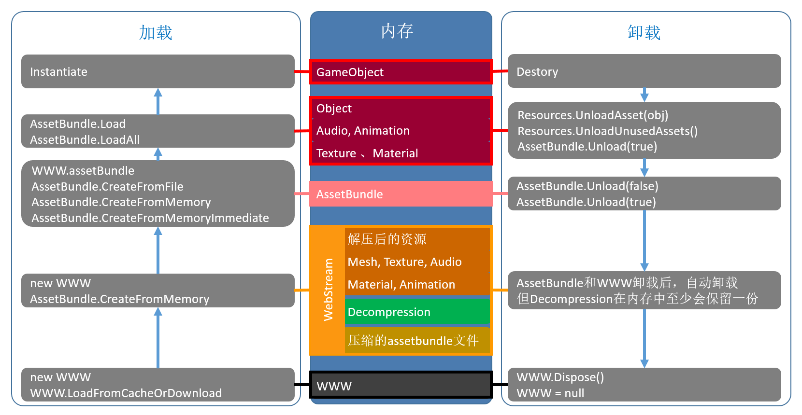

AssetBundle基础
本篇从管理机制的角度出发，谈谈其资源加载和卸载的原理。
几种加载方式比较
通过AssetBundle加载资源，分为两步，第一步是获取AssetBundle对象，第二步是通过该对象加载需要的资源。
获取AssetBundle对象的常用API
- 先获取WWW对象，再通过WWW.assetBundle获取AssetBundle对象：
1
public WWW(string url);
加载Bundle文件并获取WWW对象，完成后会在内存中创建较大的WebStream（解压后的内容，通常为原Bundle文件的4~5倍大小，纹理资源比例可能更大），因此后续的AssetBundle.Load可以直接在内存中进行。
WebStream会占用文件4~5倍内存大小是因为：AssetBundle原始文件大小 + 解压后的数据大小 + DecompressionBuffer(0.5MB), 每个Assetbundle文件在Load的时候都会产生 0.5MB的内存.
同时，由于Unity 5.3版本之前的AssetBundle文件为LZMA压缩，其压缩比类似于Zip（20%-25%）,所以对于一个1MB的原始AssetBundle文件，其加载后WebStream的大小则可能是5~6MB，因此，当项目中存在通过new WWW加载多个AssetBundle文件，且AssetBundle又无法及时释放时，导致内存占用过大。
对于占用WebStream较大的AssetBundle文件（如UI Atlas相关的AssetBundle文件等），建议使用LoadFromCacheOrDownLoad或CreateFromFile来进行替换，即将解压后的AssetBundle数据存储于本地Cache中进行使用。这种做法非常适合于内存特别吃紧的项目，即通过本地的磁盘空间来换取内存空间。
1 | public static WWW LoadFromCacheOrDownload(string url, int version, uint crc = 0); |
加载Bundle文件并获取WWW对象，同时将解压形式的Bundle内容存入磁盘中作为缓存（如果该Bundle已在缓存中，则省去这一步），完成后只会在内存中创建较小的SerializedFile，而后续的AssetBundle.Load需要通过IO从磁盘中的缓存获取。
通过之前两个接口获取WWW对象后，即可通过WWW.assetBundle获取AssetBundle对象。
- 直接获取AssetBundle：
1 | public static AssetBundle CreateFromFile(string path); |
通过未压缩的Bundle文件，同步创建AssetBundle对象，这是最快的创建方式。创建完成后只会在内存中创建较小的SerializedFile，而后续的AssetBundle.Load需要通过IO从磁盘中获取。
要确保从该接口创建的AssetBundle文件是原始文件，任何的加密手段或者文件处理都会导致这个接口的创建失败。
我当时有个需求是简单加密AssetBundle，要求以文件流形式加载，文件流加载的新版接口是AssetBundle.LoadFromMemory，官方文档对此的解释是Synchronously create an AssetBundle from a memory region（用同步方式从一块内存区域中加载AssetBundle）. 即以byte[]形式加载AssetBundle，这个方式比较慢，没有特别需求不建议使用。
1 | public static AssetBundle LoadFromMemory(byte[] binary, uint crc); // 这是2019.3的接口 |
对应有个异步版本：LoadFromMemoryAsync
从AssetBundle加载资源的常用API
public Object Load(string name, Type type);
通过给定的名字和资源类型，加载资源。加载时会自动加载其依赖的资源，即Load一个Prefab时，会自动Load其引用的Texture资源。
public Object[] LoadAll(Type type);
一次性加载Bundle中给定资源类型的所有资源。
public AssetBundleRequest LoadAsync(string name, Type type);
该接口是Load的异步版本。
这些是旧版本API，最新版2019.3LoadAsync叫：LoadAssetAsync. 所以实际使用时，安装Unity版本的对应文档查验比较好。
对比：new WWW与WWW.LoadFromCacheOrDownload
- 前者的优势
后续的Load操作在内存中进行，相比后者的IO操作开销更小；
不形成缓存文件，而后者则需要额外的磁盘空间存放缓存；
能通过WWW.texture，WWW.bytes，WWW.audioClip等接口直接加载外部资源，而后者只能用于加载AssetBundle
- 前者的劣势
每次加载都涉及到解压操作，而后者在第二次加载时就省去了解压的开销；
在内存中会有较大的WebStream，而后者在内存中只有通常较小的SerializedFile。（此项为一般情况，但并不绝对，对于序列化信息较多的Prefab，很可能出现SerializedFile比WebStream更大的情况）
AssetBundle加载卸载过程分析
一图胜千言
